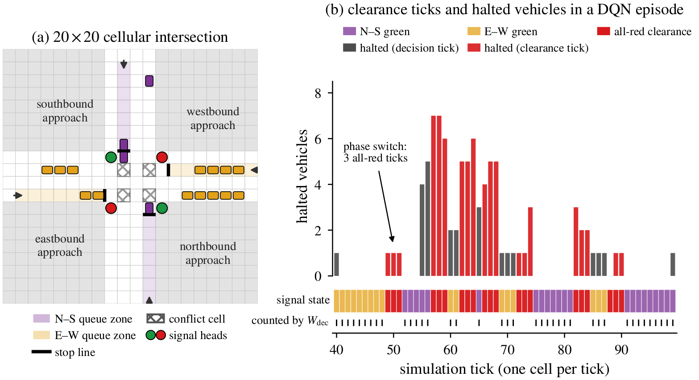
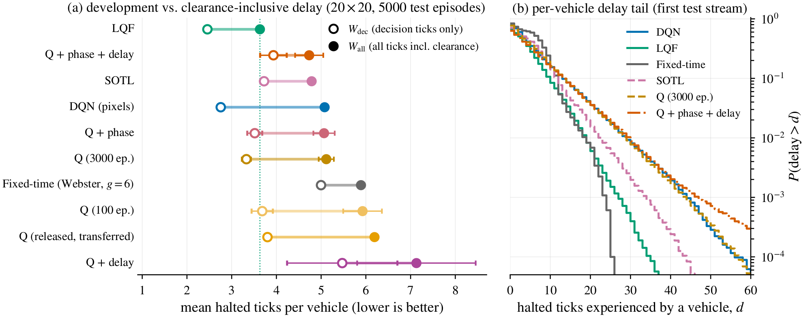
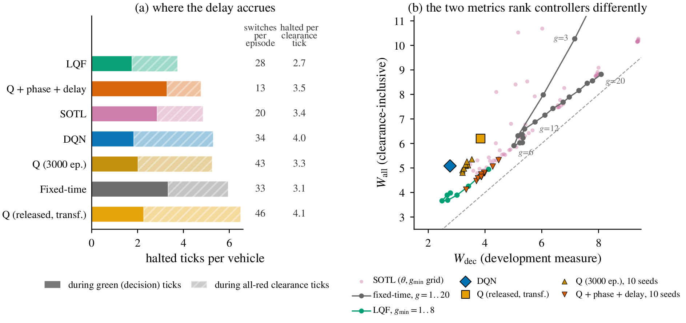
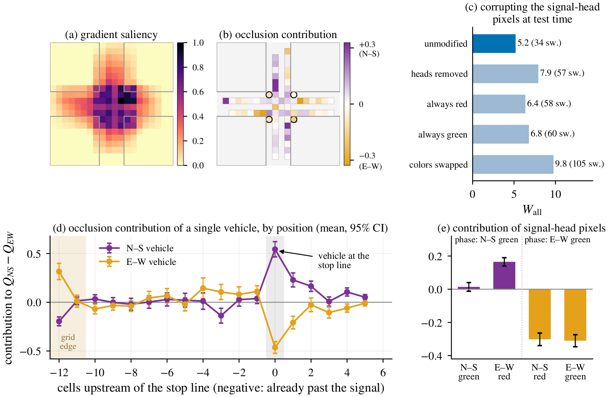
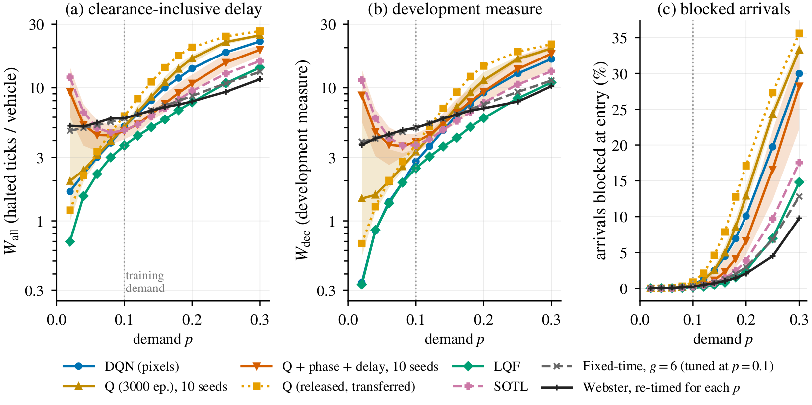

Pixels or Queues? A Careful Evaluation of Deep and Tabular Reinforcement Learning for Traffic Signal Control
School of Electrical and Computer Engineering, Science and Research Branch, Islamic Azad University, Tehran, Iran

In short. On the waiting-time measure it was developed with, a pixel-based deep Q-network clearly beats tabular Q-learning and fixed-time control. But that measure skips the all-red clearance ticks, which hold 31–65% of all halted vehicle-ticks. Once they are counted, a simple longest-queue-first rule beats every learned agent, and which learned agent comes out ahead depends on how arrivals are simulated.
Abstract
Adaptive traffic signal control is a natural testbed for reinforcement learning (RL), yet reported gains depend strongly on simulator details, reward design, and the metrics and baselines used for evaluation. We study two agents for an isolated four-approach intersection in a lightweight cellular simulator: a tabular Q-learning agent that observes queue counts, and a deep Q-network (DQN) that maps the raw 20×20×3 occupancy raster directly to phase decisions. On 5,000 held-out episodes, the released DQN (a single training run) lowers the waiting-time measure used during development by 17.2% relative to tabular agents trained on the same grid for 3,000 episodes and by 44.9% relative to Webster-timed fixed-time control.
We then add classical baselines, demand and asymmetry sweeps, per-vehicle delay tails, and a clearance-inclusive delay that also counts the all-red ticks inserted at every phase change; 31–65% of all halted vehicle-ticks fall in these ticks, which the development measure never observes. Under full accounting, the comparison between the agents depends on how arrivals are simulated. When one arrival draw is reused for all ticks of a phase change, as in the released evaluation, the DQN is no better than tabular agents trained for 3,000 episodes and worse than tabular agents that also observe the current phase and are rewarded for clearance-inclusive delay, a change that cuts their switching by 71%. With independent arrivals in every tick, as in the DQN’s own training environment, the DQN has 14.5% and 8.4% less delay than these two tabular agents.
In both settings a longest-queue-first rule has the lowest clearance-inclusive delay, and the learned agents degrade quickly above their training demand. Saliency and input ablations show that the DQN relies on vehicles at the stop lines and on the signal-head pixels, from which it infers the current phase.
Key findings
5,000 held-out episodes on the 20×20 grid
- 17.2%
lower waiting-time measure for the pixel DQN than for tabular agents trained on the same grid for 3,000 episodes.
- 44.9%
lower on the same measure than Webster-timed fixed-time control.
- 31–65%
of all halted vehicle-ticks fall in the all-red clearance ticks of phase changes, which the development measure never observes.
- LQF
A longest-queue-first rule has the lowest clearance-inclusive delay under both arrival models, ahead of every learned agent.
- 8.4–14.5%
less clearance-inclusive delay for the DQN than tabular Q-learning (3,000 episodes) and its phase-aware, clearance-rewarded variant, when arrivals are drawn independently in every tick. With one draw reused across a phase change, it is no better than either.
- 71%
fewer phase switches when the tabular agent also observes the current phase and is rewarded for clearance-inclusive delay.
Figures
From the paper










Code and citation
The simulator, the training and evaluation scripts and the trained agents are on GitHub. If you use this work, please cite:
@misc{karami2026pixels,
title = {Pixels or Queues? {A} Careful Evaluation of Deep and
Tabular Reinforcement Learning for Traffic Signal Control},
author = {Karami, Zahra and Zamanifar, Azadeh},
year = {2026},
note = {Preprint},
url = {https://zahrakrm.github.io/pixels-or-queues/}
}